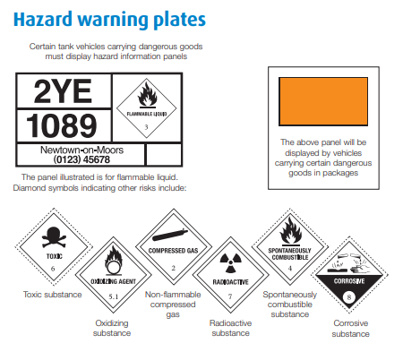

Hazard Information Panels
Hazard pictograms alert us to the presence of a hazardous materials. The below pictograms will help you know what the chemicals are and whether they may cause harm to anyone.
Please see below the Hazard Information Panels:

